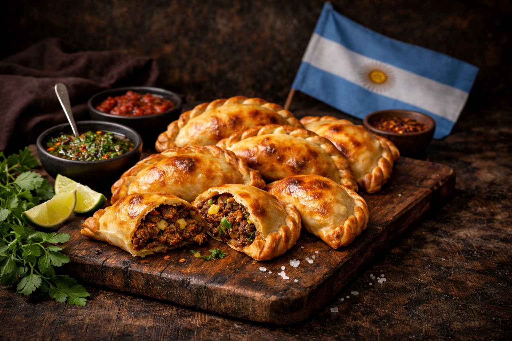

Vorspeise
Wir starten mit dem argentinischen Nationalgericht, der Empanadas .
Zum Rezept¡Hola!-Wir zeigen euch ein Einblick in argentinische Spezialitäten!

Wir starten mit dem argentinischen Nationalgericht, der Empanadas .
Zum Rezept